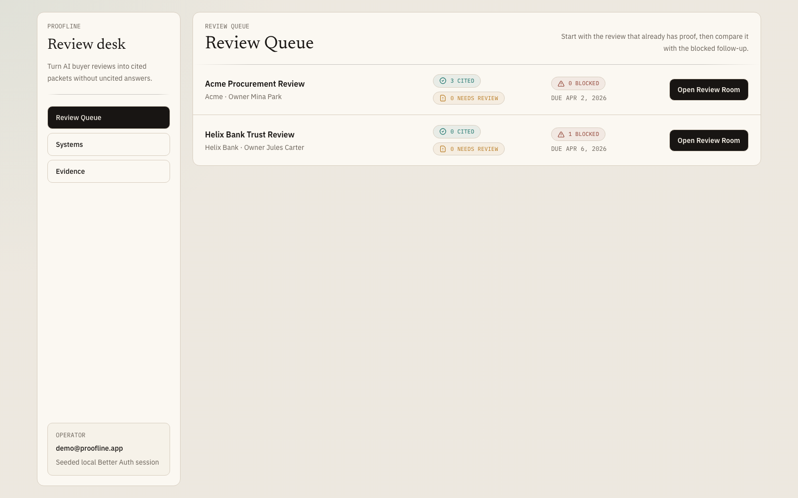
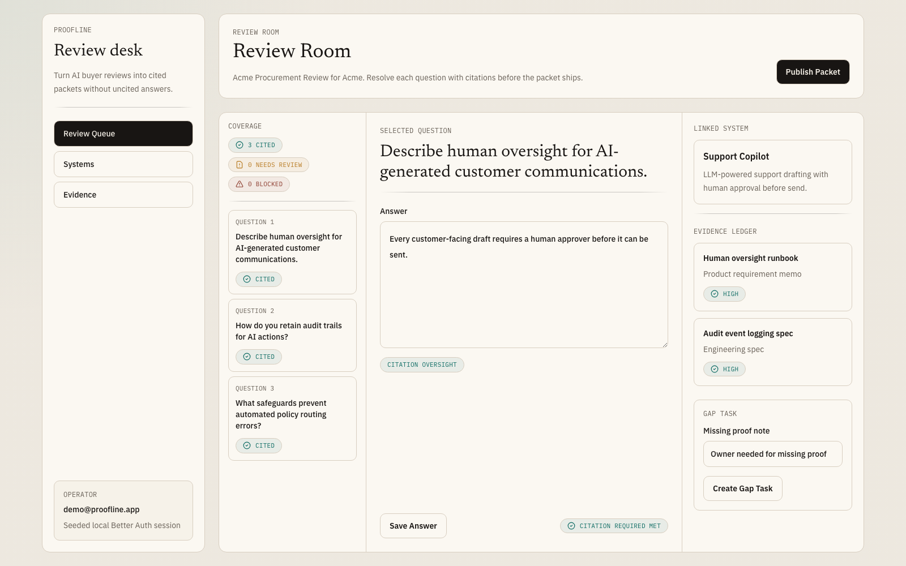
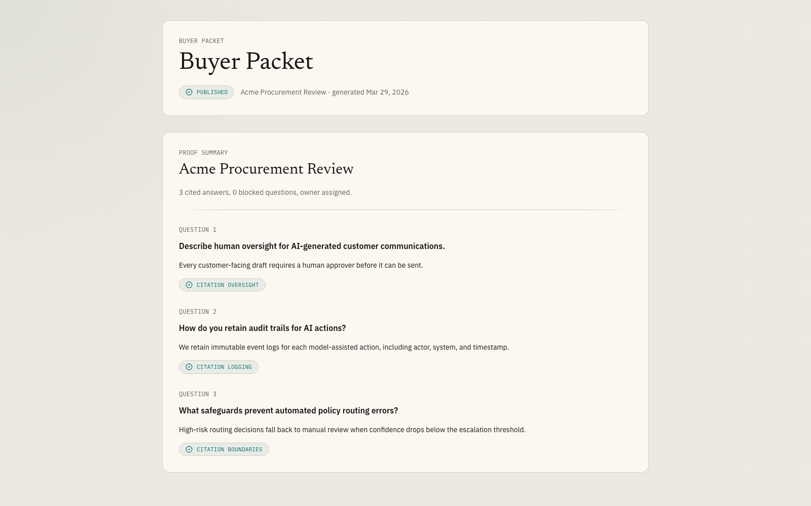

Proofline / 한 줄 정의
고객사의 AI 점검 질문에 근거 없이 답하지 않게 도와주는 도구
오늘 발표는 네 가지로 정리됩니다. 누구의 어떤 문제를 푸는지, Proofline이 그 문제를 어떻게 해결하는지, 이 제품을 끝까지 밀어붙이기 위해 어떤 Ralph 세팅을 만들었는지, 그리고 지금 무엇이 실제로 동작하는지 보여드립니다.
문제
질문 대응
질문은 오는데, 근거를 붙여 답할 운영 체계가 없는 상황
제품
답변 관리
질문, 답변, 근거, 진행 상태, 최종 답변본을 한 흐름으로 관리
데모
실행 가능
대기열, 검토 화면, 최종본 만들기까지 실제 화면으로 바로 보여줄 수 있음
한 문장 정의: Proofline은 고객사가 보내는 AI 관련 점검 질문에 대해,
답변과 근거를 함께 정리하고 준비되지 않은 답변은 밖으로 나가지 않게 막는 제품입니다.
문제 정의
문제는 “문서를 잘 정리하는 것”이 아니라, 계약 진행 중 들어온 AI 관련 질문에 근거를 붙여 답할 시스템이 없다는 것입니다.
누구의 문제인가
기업 고객에게 AI 서비스를 파는 팀
운영 리드, 보안 담당자, 영업 지원 인력이 이 일을 떠안습니다. 하지만 전담 대응팀은 없고, 질문이 들어올 때마다 급하게 처리합니다.
- 구매, 보안, 법무 질문이 딜 중간에 갑자기 들어옵니다.
- 답변은 Slack, Notion, 오래된 문서를 뒤져 급히 만듭니다.
- 누가 왜 이 답을 썼는지, 어떤 근거였는지 남지 않습니다.
얼마나 자주, 얼마나 아픈가
질문은 딜마다 반복되고, 한 번 막히면 영업 속도와 신뢰가 같이 떨어집니다.
이 문제는 일회성 문서 작업이 아닙니다. 기업 고객과 계약이 진행될수록 비슷한 질문이 반복되고, 질문 하나만 막혀도 검토 전체가 멈출 수 있습니다.
- 반복성: 기업 고객 계약이 많을수록 같은 종류의 질문이 계속 들어옵니다.
- 고통: 답변이 늦어지면 딜이 밀리고, 근거가 약하면 신뢰가 흔들립니다.
- 본질: 필요한 것은 답변 생성기가 아니라, 근거가 붙은 답변을 만드는 운영 체계입니다.
예시 장면: Helix Bank가 “사람 확인 없이 답변이 나가지 않는다는 근거를 보여달라”고 묻는 순간,
팀은 답변 문장보다 먼저 누가 근거 문서를 갖고 있는지부터 찾아야 합니다. 이때 정리된 체계가 없으면 딜이 멈춥니다.
솔루션
Proofline은 들어온 질문을 하나의 검토 건으로 묶고, 질문마다 답변과 근거를 관리한 뒤, 준비된 답만 고객에게 보낼 최종본으로 정리하는 도구입니다.
1
질문 접수
고객 질문이 들어오면 하나의 검토 건으로 묶고, 질문 목록을 만듭니다.
2
대기열 분류
무엇이 바로 답할 수 있고, 무엇이 아직 막혀 있는지 나눕니다.
3
답변 검토
질문별로 답변, 관련 기능, 근거 문서를 함께 보며 정리합니다.
4
최종본 만들기
모든 질문이 준비되면 고객이 볼 최종 답변 묶음으로 정리합니다.
오늘 데모 범위: 현재 구현은 2단계부터 4단계입니다. 즉, 질문이 이미 들어온 뒤
내부 팀이 어떻게 검토하고 최종본을 만드는지 보여줍니다.
나의 랄프 세팅
이번 Ralph는 “한 번 돌고 끝나는 프롬프트”가 아니라, 중단돼도 이어지는 디스크 기반 실행 시스템으로 설계했습니다.
실행 도구
Codex + 규칙 파일 + 스킬
- OpenAI Codex를 실행 엔진으로 사용
- 프로젝트 루트의
AGENTS.md가 최상위 규칙 .agents/skills/의 스킬 파일을 자동으로 읽고 따름- 프롬프트 하나로 전체 파이프라인 기동
Tacigent 구조
7단계 Ralph 루프
intake → problem → solution → design → build → marketing → pitch- 각 단계마다 방법 정하기, 탐색, 비평, 리뷰를 반복
- 13개 Tacigent 스킬 + 13개 보강 스킬로 구성
- 단발성 실행이 아니라 재현 가능한 절차로 분해
지속성
기록 파일 기반 이어하기
- 진행 상태를 메모리가 아니라 디스크에 기록
.tacigent/artifacts/가 체크포인트 역할- 중간에 끊겨도 이미 만든 파일은 건너뛰고 이어서 실행
- 에이전트가 멈춰도 처음부터 다시 하지 않음
전달할 메시지: 이번 Ralph의 핵심은 “좋은 프롬프트”가 아니라,
실행 규칙, 단계 분리, 기록 파일 체크포인트로 지속 가능한 에이전트 시스템을 만든 점입니다.
현재 진행 상황
핵심 흐름은 이미 동작하며, 현재 데모는 “질문이 들어온 뒤 처리하는 과정”에 집중합니다.
구현 완료
지금 보여줄 수 있는 기능
- Better Auth 로그인
- 검토 대기열 / 검토 화면 / 최종 답변 화면
- 기능 목록 / 근거 목록 관리
- 준비되지 않은 답변은 최종본 만들기 차단
검증
기술적 신뢰도
typecheck통과lint통과build통과smoke통과
아직 안 한 것
다음 확장 범위
- 질문 자동 접수
- 문서 업로드와 질문별 근거 연결
- 영구 저장 데이터
- 실제 design partner 검증



오늘 보여줄 것
3분 데모
- 로그인
- 대기열에서 Acme와 Helix 비교
- 심사실에서 질문과 근거 구조 설명
- 패킷 발행과 결과 화면 확인
데모 가이드
데모는 “무엇이 막혔는가 → 어떻게 답을 정리하는가 → 마지막에 무엇을 보내는가” 순서로 3분 안에 끝내는 것이 가장 설득력 있습니다.
클릭 순서
- 1.
http://127.0.0.1:3010/login에서 로그인 - 2. 심사 대기열에서 Acme 구매 심사와 Helix Bank 신뢰 심사를 비교
- 3. 발행 가능한 Acme 심사를 열고 질문, 근거, 관련 기능 구조 설명
- 4. 패킷 발행을 눌러 고객용 최종 답변 화면으로 이동
- 5. 시간이 남으면 Helix 심사를 열어 막힘 상태와 후속 작업을 보여주기
말할 포인트
- “이 화면은 지금 어떤 심사가 막혀 있고 무엇이 발행 가능한지 보여줍니다.”
- “질문은 그냥 답만 쓰는 게 아니라, 관련 기능과 근거를 함께 봅니다.”
- “근거가 없으면 보내지 않고 막힘 상태로 남깁니다.”
- “모든 질문이 정리되면 고객에게 보낼 최종 답변본을 만듭니다.”
발표 팁: 기능 목록보다 장면 전환에 집중하세요.
대기열에서는 “무엇이 막혔는가”, 검토 화면에서는 “왜 이 답을 믿을 수 있는가”, 마지막 화면에서는 “무엇을 고객에게 보내는가”만 말하면 됩니다.